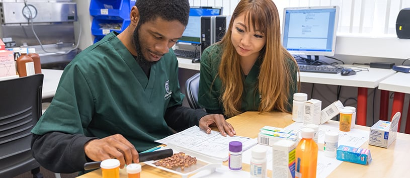

If you are thinking of studying pharmacy a great way to experiance the field is getting a job as a pharmacy technician. There is both retail and hospital pharmacies that you can aquire a technician position.
A pharmacy technician supplies medications to patients, fills prescriptions, and types in prescriptions from doctors offices. They are benefical in helping the pharmacist. Thier work is always double checked by the pharmacist, but it is a great learning experiance if you would like to get into the field of pharmacy.
in order to become a pharmacy technician you have to aquire certification. There are two different types of certification. There is a state certification and a national certification. State certifications are valid in the state you are practicing in, while national certifications are valid within all states. In order to be certified either your job supplies you with the classes and training needed or you can locate a program that offers these services.